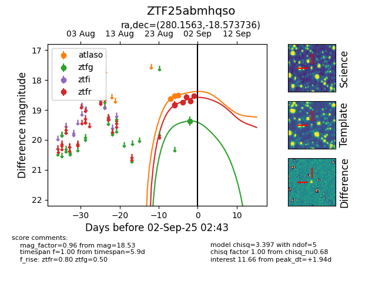

FINK: ZTF25abmhqso
Lasair: ZTF25abmhqso
ALeRCE: ZTF25abmhqso
ZTF25abmhqso (ztf,fink)
equatorial (ra, dec) = (280.1563,-18.57374)
galactic (l, b) = (15.1393,-6.05336)

last atlaso=18.29, ztfg=19.56, ztfr=18.85
8 atlaso, 5 ztfg, 12 ztfr detections